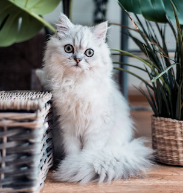
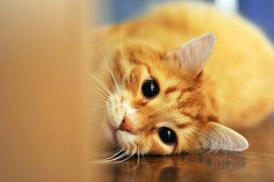
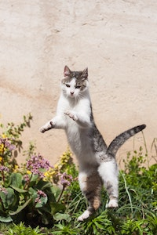
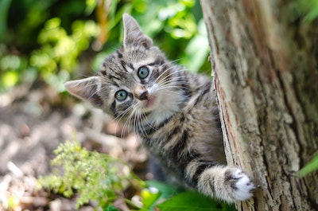

We all love our feline friends. But, if we're being honest, do we really understand their body language? Chances are, a cat has puzzled you before. It's important to pay attention to the position of a cats body, eyes, tail and ears. Now you can learn what they REALLY are trying to tell you. This guide to cat body language and behavior will at least take *some* of the mystery out of understanding these complex creatures.
Tail
Click the photos to cycle through more information.
 License: Unsplash. Source: Rana Sawalha.
Here, the cat is sitting with its tail down and wrapped around its lower body. When a cat's tail is down, it usually means the animal is inquisitive and trying to gauge a situation. There are exceptions, of course, like when a cat is laying down or sleeping. But, when a cat's tail is down, wrapped or tucked, it's a good idea to give them a moment to take in their surroundings.
License: Unsplash. Source: Sereja Ris.
This photo is a great example of a kitten who is fearful of an unknown object. The tail is pointed downward and curved toward its back legs. The cat isn't sure how to interact with the object, so its tail is signaling it's fearful.
License: Unsplash. Source: Bruce Kee.
This cat's tail is pointed up and is straight — not curved. This feline is most likely feeling confident and happy. This cat is in its element and can safely and happily be interacted with.
License: Unsplash. Source: Rebecca Campbell.
Here a cat has its tail level to its body and slightly curved. It's likely this cat's tail was waving back and forth, which means something caught a cat's attention and they're trying to figure out what it is and their next steps. If their tail was moving rapidly back and forth, they're likely annoyed. A calm cat will either not have a moving tail or it will be moving very slowly. The only exception is when a cat's tail is puffed up and still. That's means they're spooked and should be left alone!
Eyes
Click the photos to cycle through more information.
 License: Unsplash. Source: Destiny Wiens.
When a cat's eyes are dilated, this can mean they are feeling surprised or stimulated, which can either be in a negative or positive way. For example, you'll notice a cat's eyes will dilate when they're looking to pounce on a toy or other object.
License: Unsplash. Source: Nadjib BR.
Half-closed eyes usually mean that a cat is relaxed and comfortable. It can also mean your pet feels safe and trusts you enough to let their guard down. When a cat slow blinks, this means your cat feels comofortable. It's a way for your cat to say: "I love you!"
License: Unsplash. Source: Felice Wölke.
When a cat's eyes are in slits, or constricted, consider the lighting and context. Sometimes a cat's eyes will be in slits simply because there's bright, direct light. Other times, it means the cat the cat is feeling tense or irritable. Are you annoying your cat? Probably.
License: Unsplash. Source: Daniel Zopf.
When a cat is staring directly at you, they could either be trying to get your attention or challenging you. You'll want to pay attention to their pupils and other body signals to see how to respond.
Body
Click the photos to cycle through more information.
 License: Unsplash. Source: Kanashi.
Here is an example of a confident cat playing and possibly hunting outside. The cat's open body and posture makes it seem large and intimidating. If a cat is facing you, it's usually feeling confident. Plus, its exposed belly shows that it's confident and ready to face whatever comes its way. This cat is likely to be approached, but don't be surprised when it wants to play with you or treats you as its prey.
License: Unsplash. Source: Justin Sinclair.
The cat on the left is standing sideways and is slightly hunched downward with a little arch in its back. This cat is likely feeling threatened or nervous. Its slinking body language also suggest that it's trying to be as quiet and imperceptible as possible. Don't approach this kitty until they're ready.
License: Unsplash. Source: Jacalyn Beales.
This cat is totally comfortable, relaxed and content. As tempting as it is to just rub that little belly, you're likely to activate a hunting response that'll signal you're their prey. Some cats will gladly let you get some belly rubs in while others will latch onto your hand. So, don't always take this position as a sign that they want kisses all over their tummy. You might be unpleasntly surprised.
License: Unsplash. Source: Kristina Yadykina.
Here is a great example of a cat directly facing you with a confident and curious expression. The cat's slightly cocked head shows that they're thinking about what you're doing. Something you're doing is grabbing their attention! Feel free to slowly approach them and extend out your hand.
Ears
Click the photos to cycle through more information.
 License: Unsplash. Source: Koen Eijkelenboom.
These cat's ears are perked up and pointed straight out. This means the cat is alert and is focused on something. It doesn't necessarily mean anything negative, but it does mean you should be careful not to overstimulate the feline.
License: Unsplash. Source: Max Baskakov.
This cat's ears are pinned flat on its head, so this means they're pretty scared. This cat's in a defensive state, so you should definitely leave them alone. Paired with hissing and exposed teeth, this cat is aggressive and should not be touched. Leave them alone!
License: Unsplash. Source: Michael Sum.
This cat's ears are pointed to the side, which means they're assessing a potential threat. In this cat's case, they're relaxed and sleeping, but a sound or other stimulus caught their attention. If their ears turned all the way back, they're likely anxious or fearful.
License: Unsplash. Source: Nathz Guardia.
This cat's ear position is a great example of when a cat has their ears straight forward. They're still angled slightly, which can indicate apprehension. But, generally, this cat is feeling confident and in its element. Feel free to slowly and gently approach!
Now that you know more about cats and their body language, you'll be able to better understand these fun pets. Just like humans, each cat is different. Behavior varies across personalities, life experience, age and other factors. Use these tips as a basic guideline when interacting with a kitty.
If you're interested, watch this video for an in-depth look at cat behavior and body language.
Sources: Pasadena Star-News, Pet MD, iHeart Cats, Pet Finder and Tuft + Paw. The header image is from Unsplash by Cédric VT. Created by Julia Mitchem. To see my code, here is my GitHub repo.